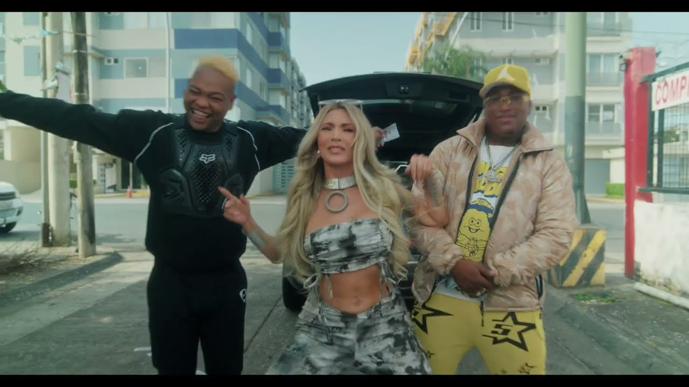

Jasú Montero, nacida en Guayaquil, es cantante, actriz y presentadora. Se subió a un escenario antes de cumplir los veinte con Kandela & Son… y nunca más se bajó.
“El escenario no es un trabajo: es mi casa.”
No te lo pierdas
Lo último
YouTube oficial
Blog
Tres locaciones, un vestido imposible y una madrugada entera de rodaje. La historia completa…
Leer más ›Del primer ensayo a los estadios llenos. Un repaso íntimo por el grupo que me cambió la vida…
Leer más ›Llamado a las 5h00, maquillaje, pauta y al aire. Lo que no se ve del matinal de TC…
Leer más ›En el escenario

Contrataciones
Shows, eventos privados, publicidad o entrevistas: escríbenos y el equipo responde en menos de 48 horas.
contrataciones@jasumontero.com